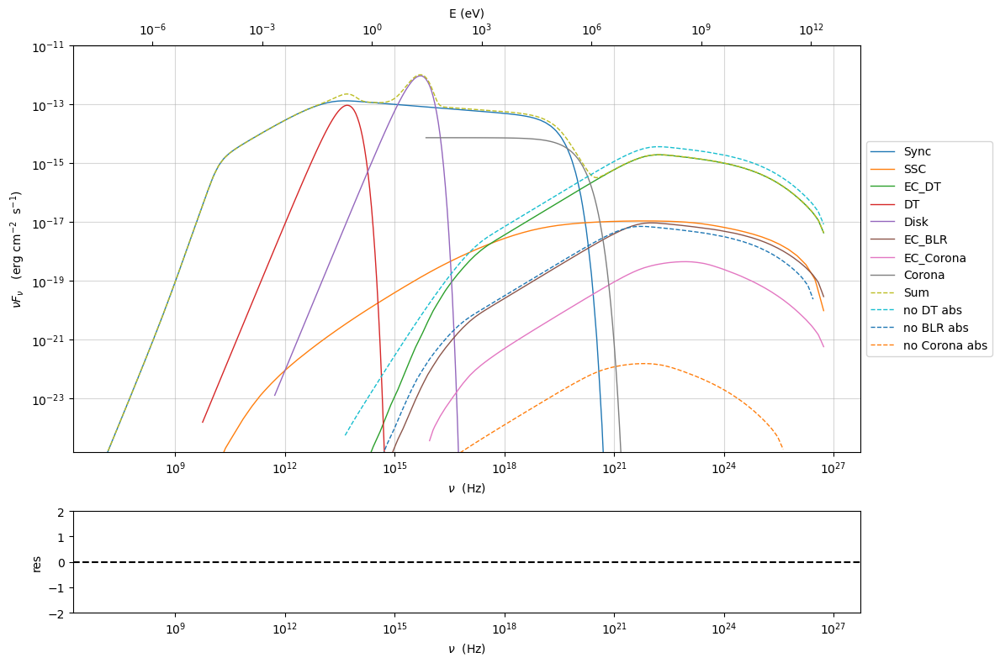
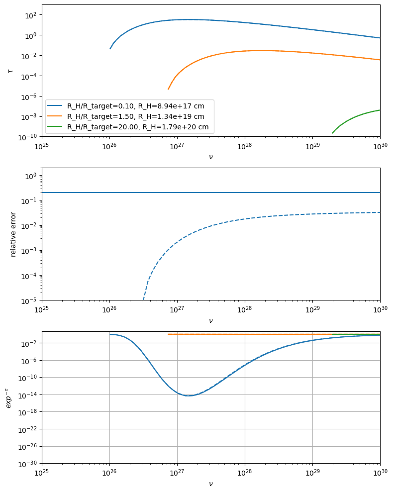
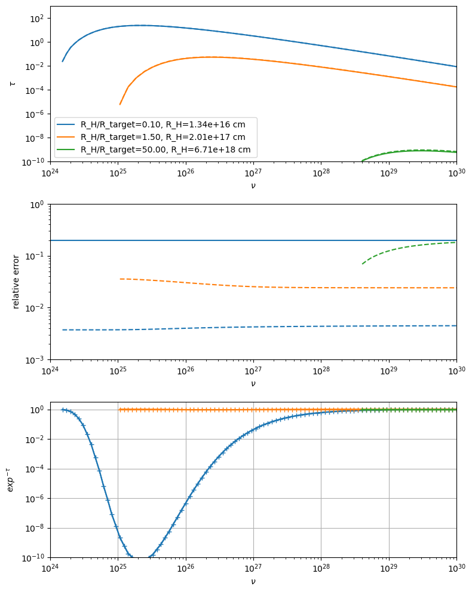
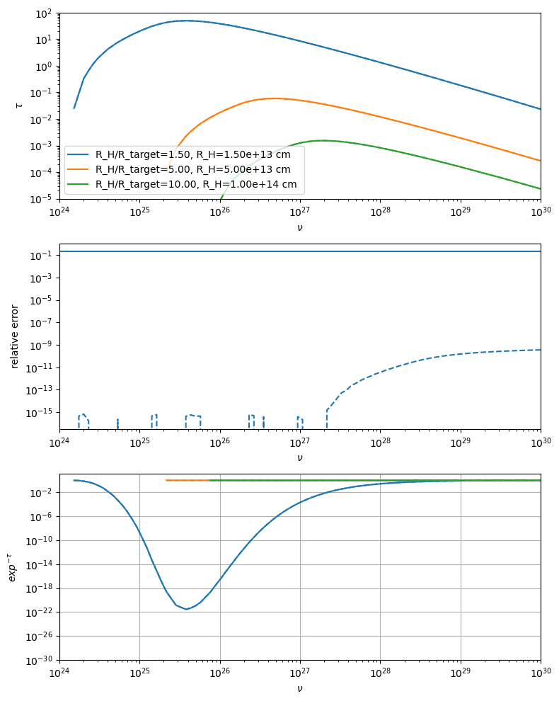
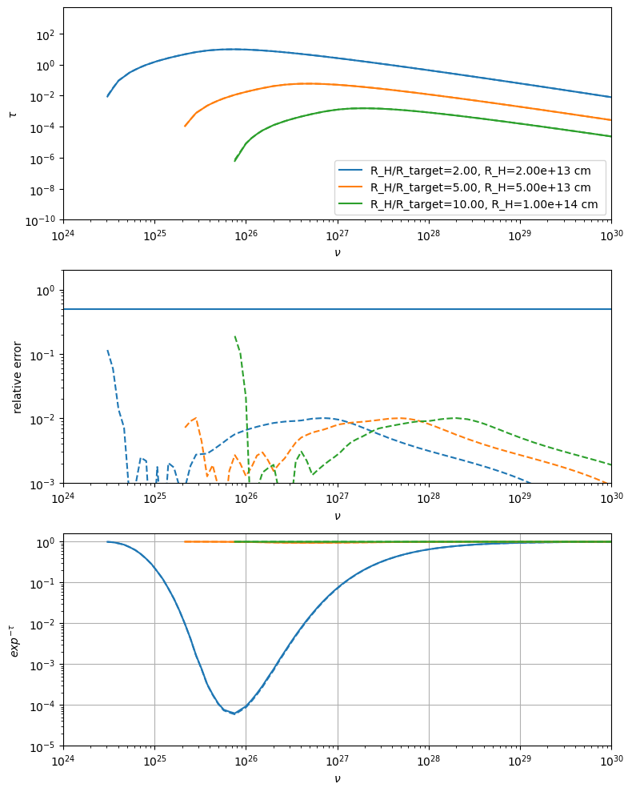
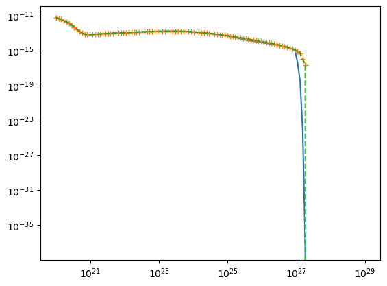
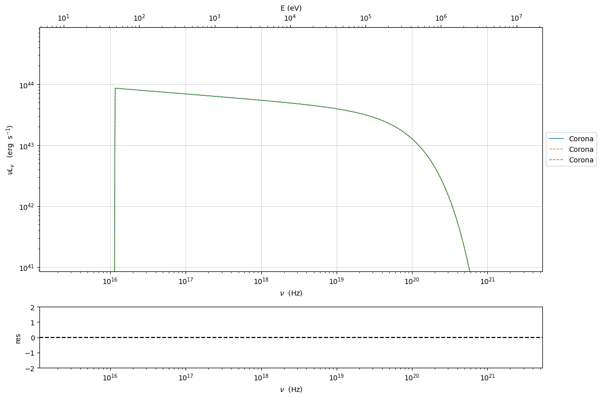

Internal absorption#
import jetset
print('tested with',jetset.__version__)
tested with 1.4.0rc3
In this tutorial we show how to use the internal absorption for external radiative fields.
We first create a leptonic jet model with e EC components.
from jetset.jet_model import Jet
import numpy as np
from jetset.template_2Dmodel import EBLAbsorptionTemplate
import astropy.units as u
ebl_dominguez_2010=EBLAbsorptionTemplate.from_name('Dominguez_2010_v2011')
ebl_dominguez_lopez=EBLAbsorptionTemplate.from_name('Dominguez_2023')
ebl_finke=EBLAbsorptionTemplate.from_name('Finke_2010')
ebl_franceschini=EBLAbsorptionTemplate.from_name('Franceschini_2008')
jetset_model = Jet(name="compact_int_abs",emitters_distribution="bkn",beaming_expr='bulk_theta')
jetset_model.add_EC_component(EC_components_list=['EC_DT','EC_BLR','EC_Corona'],disk_type='BB')
jetset_model.make_conical_jet(theta_open=5,R=1E16)
jetset_model.set_EC_dependencies()
jetset_model.set_par('L_Disk',val=2E45)
jetset_model.set_par('gmax',val=5E5)
jetset_model.set_par('gmin',val=2.)
jetset_model.set_par('R_H',val=1E17)
jetset_model.set_par('p',val=1.5)
jetset_model.set_par('p_1',val=3.2)
jetset_model.set_par('B',val=1.5)
jetset_model.set_par('z_cosm',val=0.6)
jetset_model.set_par('BulkFactor',val=10)
jetset_model.set_par('theta',val=1)
jetset_model.set_par('gamma_break',val=5E2)
jetset_model.parameters.tau_DT.val=0.1
jetset_model.parameters.T_DT.val=1000
jetset_model.parameters.theta.freeze()
jetset_model.parameters.R_H.val=1E18
jetset_model.set_N_from_nuFnu(nu_obs=1E13,nuFnu_obs=1E-13)
jetset_model.set_external_field_transf('blob')
adding par: R_H to R
adding par: theta_open to R
==> par R is depending on ['R_H', 'theta_open'] according to expr: R =
np.tan(np.radians(theta_open))*R_H
setting R_H to 1.1430052302761344e+17
adding par: L_Disk to R_BLR_in
==> par R_BLR_in is depending on ['L_Disk'] according to expr: R_BLR_in =
3E17*(L_Disk/1E46)**0.5
adding par: R_BLR_in to R_BLR_out
==> par R_BLR_out is depending on ['R_BLR_in'] according to expr: R_BLR_out =
R_BLR_in*1.1
adding par: L_Disk to R_DT
==> par R_DT is depending on ['L_Disk'] according to expr: R_DT =
2E19*(L_Disk/1E46)**0.5
jetset_model
--------------------------------------------------------------------------------
model description:
--------------------------------------------------------------------------------
type: Jet
name: compact_int_abs
geometry: spherical
electrons distribution:
type: bkn
gamma energy grid size: 201
gmin grid : 2.000000e+00
gmax grid : 5.000000e+05
normalization: True
log-values: False
ratio of cold protons to relativistic electrons: 1.000000e+00
accretion disk:
disk Type: BB
L disk: 2.000000e+45 (erg/s)
T disk: 1.000000e+05 (K)
nu peak disk: 8.171810e+15 (Hz)
radiative fields:
seed photons grid size: 100
IC emission grid size: 100
source emissivity lower bound : 1.000000e-120
spectral components:
name:Sum, state: on
name:Sum, hidden: False
name:Sync, state: self-abs
name:Sync, hidden: False
name:SSC, state: on
name:SSC, hidden: False
name:EC_DT, state: on
name:EC_DT, hidden: False
name:DT, state: on
name:DT, hidden: False
name:Disk, state: on
name:Disk, hidden: False
name:EC_BLR, state: on
name:EC_BLR, hidden: False
name:EC_Corona, state: on
name:EC_Corona, hidden: False
name:Corona, state: on
name:Corona, hidden: False
external fields transformation method: blob
SED info:
nu grid size jetkernel: 1000
nu size: 500
nu mix (Hz): 1.000000e+06
nu max (Hz): 1.000000e+30
flux plot lower bound : 1.000000e-30
--------------------------------------------------------------------------------
WARNING: AstropyDeprecationWarning: 'classic' backend for show_in_notebook() is deprecated as of 6.1. Instead, use the supported backend 'ipydatagrid'. [astropy.table.table]
| model name | name | par type | units | val | phys. bound. min | phys. bound. max | log | frozen |
|---|---|---|---|---|---|---|---|---|
| compact_int_abs | *R(D,theta_open) | region_size | cm | 8.748866e+16 | 1.000000e+03 | 1.000000e+30 | False | True |
| compact_int_abs | R_H(M) | region_position | cm | 1.000000e+18 | 0.000000e+00 | -- | False | False |
| compact_int_abs | B | magnetic_field | gauss | 1.500000e+00 | 0.000000e+00 | -- | False | False |
| compact_int_abs | NH_cold_to_rel_e | cold_p_to_rel_e_ratio | 1.000000e+00 | 0.000000e+00 | -- | False | True | |
| compact_int_abs | theta | jet-viewing-angle | deg | 1.000000e+00 | 0.000000e+00 | 9.000000e+01 | False | True |
| compact_int_abs | BulkFactor | jet-bulk-factor | lorentz-factor* | 1.000000e+01 | 1.000000e+00 | 1.000000e+05 | False | False |
| compact_int_abs | z_cosm | redshift | 6.000000e-01 | 0.000000e+00 | -- | False | False | |
| compact_int_abs | gmin | low-energy-cut-off | lorentz-factor* | 2.000000e+00 | 1.000000e+00 | 1.000000e+09 | False | False |
| compact_int_abs | gmax | high-energy-cut-off | lorentz-factor* | 5.000000e+05 | 1.000000e+00 | 1.000000e+15 | False | False |
| compact_int_abs | N | emitters_density | 1 / cm3 | 6.143592e-02 | 0.000000e+00 | -- | False | False |
| compact_int_abs | gamma_break | turn-over-energy | lorentz-factor* | 5.000000e+02 | 1.000000e+00 | 1.000000e+09 | False | False |
| compact_int_abs | p | LE_spectral_slope | 1.500000e+00 | -1.000000e+01 | 1.000000e+01 | False | False | |
| compact_int_abs | p_1 | HE_spectral_slope | 3.200000e+00 | -1.000000e+01 | 1.000000e+01 | False | False | |
| compact_int_abs | T_DT | DT | K | 1.000000e+03 | 0.000000e+00 | -- | False | False |
| compact_int_abs | *R_DT(D,L_Disk) | DT | cm | 8.944272e+18 | 0.000000e+00 | -- | False | True |
| compact_int_abs | tau_DT | DT | 1.000000e-01 | 0.000000e+00 | 1.000000e+00 | False | False | |
| compact_int_abs | tau_BLR | BLR | 1.000000e-01 | 0.000000e+00 | 1.000000e+00 | False | False | |
| compact_int_abs | *R_BLR_in(D,L_Disk) | BLR | cm | 1.341641e+17 | 0.000000e+00 | -- | False | True |
| compact_int_abs | *R_BLR_out(D,R_BLR_in) | BLR | cm | 1.475805e+17 | 0.000000e+00 | -- | False | True |
| compact_int_abs | L_Corona | Corona | erg / s | 1.000000e+44 | 0.000000e+00 | -- | False | False |
| compact_int_abs | R_Corona | Corona | cm | 1.000000e+13 | 0.000000e+00 | -- | False | False |
| compact_int_abs | R_H_Corona | Corona | cm | 0.000000e+00 | 0.000000e+00 | -- | False | False |
| compact_int_abs | alpha_Corona | Corona | 1.000000e+00 | 0.000000e+00 | -- | False | False | |
| compact_int_abs | nu_cut_low_Corona | Corona | Hz | 0.000000e+00 | 0.000000e+00 | -- | False | False |
| compact_int_abs | nu_cut_Corona | Corona | Hz | 1.000000e+20 | 0.000000e+00 | -- | False | False |
| compact_int_abs | L_Disk(M) | Disk | erg / s | 2.000000e+45 | 0.000000e+00 | -- | False | False |
| compact_int_abs | T_Disk | Disk | K | 1.000000e+05 | 0.000000e+00 | -- | False | False |
| compact_int_abs | theta_open(M) | user_defined | deg | 5.000000e+00 | 1.000000e+00 | 1.000000e+01 | False | False |
--------------------------------------------------------------------------------
None
Now we can enable the internal absorption for the BLR and DT fields, and evaluate the model with internal absorption applied
jetset_model.remove_internal_absorption('DT',)
jetset_model.remove_internal_absorption('BLR', )
jetset_model.remove_internal_absorption('Corona')
jetset_model.eval()
p=jetset_model.plot_model()
#jetset_model.remove_internal_absorption('DT')
#jetset_model.remove_internal_absorption('BLR')
#jetset_model.remove_internal_absorption('Corona')
jetset_model.set_external_field_transf('disk')
jetset_model.eval()
jetset_model.plot_model(plot_obj=p,comp='EC_DT',label='no DT abs',line_style='--')
jetset_model.plot_model(plot_obj=p,comp='EC_BLR',label='no BLR abs',line_style='--')
jetset_model.plot_model(plot_obj=p,comp='EC_Corona',label='no Corona abs',line_style='--')
<jetset.plot_sedfit.PlotSED at 0x313d2bec0>

jetset_model.enable_internal_absorption('DT')
jetset_model.enable_internal_absorption('BLR')
jetset_model.enable_internal_absorption('Corona')
This model can be used now for model fitting.
jetset_model.show_internal_absorption_components()
internal absorption for component: DT
('N_hard', 20)
('N_soft', 50)
('N_theta', 30)
('N_R_H', 20)
('nu_min', None)
('comp', 'DT')
('use_R_H_profile_extrapolation', False)
('use_sigma_gamma_gamma_fast', False)
internal absorption for component: BLR
('N_hard', 20)
('N_soft', 50)
('N_theta', 30)
('N_R_H', 20)
('nu_min', None)
('comp', 'BLR')
('use_R_H_profile_extrapolation', False)
('use_sigma_gamma_gamma_fast', False)
internal absorption for component: Corona
('N_hard', 20)
('N_soft', 50)
('N_theta', 30)
('N_R_H', 20)
('nu_min', None)
('comp', 'Corona')
('use_R_H_profile_extrapolation', False)
('use_sigma_gamma_gamma_fast', False)
Please, notice that the internal absorption will slow down a bit the computation. Let’s quantify the effect for a single component. First we remove the BLR and Corona absorption, to assess the impact of a single component.
jetset_model.remove_internal_absorption('BLR')
jetset_model.remove_internal_absorption('Corona')
jetset_model.show_internal_absorption_components()
internal absorption for component: DT
('N_hard', 20)
('N_soft', 50)
('N_theta', 30)
('N_R_H', 20)
('nu_min', None)
('comp', 'DT')
('use_R_H_profile_extrapolation', False)
('use_sigma_gamma_gamma_fast', False)
%timeit jetset_model.eval()
8.57 ms ± 528 μs per loop (mean ± std. dev. of 7 runs, 100 loops each)
jetset_model.remove_internal_absorption('DT')
%timeit jetset_model.eval()
jetset_model.show_internal_absorption_components()
8.29 ms ± 61.6 μs per loop (mean ± std. dev. of 7 runs, 100 loops each)
internal absorption not enabled in this jet model
The increase in computational time, for component, compared to an EC model without absorption, is of a factor of ~ 2.5
By setting use_R_H_profile_extrapolation=True, we can speed up the
process
jetset_model.enable_internal_absorption('DT',use_R_H_profile_extrapolation=False)
%timeit _=jetset_model.eval_internal_absorption(comp='DT', peak=False)
1.09 ms ± 2.85 μs per loop (mean ± std. dev. of 7 runs, 1,000 loops each)
jetset_model.enable_internal_absorption('DT',use_R_H_profile_extrapolation=True)
%timeit _=jetset_model.eval_internal_absorption(comp='DT', peak=False)
986 μs ± 1.65 μs per loop (mean ± std. dev. of 7 runs, 1,000 loops each)
By setting use_sigma_gamma_gamma_fast=True, we can further speed up
the process, by using interpolated cross section.
jetset_model.enable_internal_absorption('DT',use_sigma_gamma_gamma_fast=True,use_R_H_profile_extrapolation=True)
%timeit _=jetset_model.eval_internal_absorption(comp='DT', peak=False)
591 μs ± 1.26 μs per loop (mean ± std. dev. of 7 runs, 1,000 loops each)
jetset_model.enable_internal_absorption('DT',use_R_H_profile_extrapolation=True,use_sigma_gamma_gamma_fast=True)
%timeit jetset_model.eval()
8.33 ms ± 120 μs per loop (mean ± std. dev. of 7 runs, 100 loops each)
jetset_model.enable_internal_absorption('DT',use_R_H_profile_extrapolation=True)
jetset_model.enable_internal_absorption('BLR',use_R_H_profile_extrapolation=True)
jetset_model.enable_internal_absorption('Corona',use_R_H_profile_extrapolation=True)
%timeit jetset_model.eval()
8.36 ms ± 44.6 μs per loop (mean ± std. dev. of 7 runs, 100 loops each)
The increase in computational time is lower now, down to a factor of ~1.1 per absorption component.
In the following some plots showing the accuracy effect when using
use_R_H_profile_extrapolation=True, so you can choose accordingly,
if whether to use the approximation or not.
jetset_model.remove_internal_absorption('BLR')
jetset_model.remove_internal_absorption('DT')
jetset_model.enable_internal_absorption('DT',use_R_H_profile_extrapolation=True,use_sigma_gamma_gamma_fast=True)
jetset_model.enable_internal_absorption('BLR',use_R_H_profile_extrapolation=True,use_sigma_gamma_gamma_fast=True)
%timeit jetset_model.eval()
8.34 ms ± 25.1 μs per loop (mean ± std. dev. of 7 runs, 100 loops each)
from matplotlib import pylab as plt
jetset_model.parameters.tau_BLR.val=0.1
#jetset_model.parameters.T_DT.val=1000
fig,axs=plt.subplots(3,1,figsize=(8,10))
R_DT=jetset_model.parameters.R_DT.val
colors = ['C0','C1','C2']
comp='DT'
jetset_model.enable_internal_absorption(comp,N_R_H=50,N_theta=50,N_soft=50,N_hard=50,use_R_H_profile_extrapolation=False)
nu_hard_min=1E25
nu_tau=np.logspace(np.log10(nu_hard_min),30,100)
for ID,f in enumerate([.1,1.5,20]):
jetset_model.parameters.R_H.val=R_DT*f
jetset_model.eval()
y,x=jetset_model.eval_internal_absorption(comp=comp,peak=False,nu=nu_tau)
x=x*u.Hz
msk=y>1E-10
axs[0].loglog( x[msk],y[msk],c=colors[ID],label='R_H/R_target=%2.2f, R_H=%2.2e cm '%(f,jetset_model.parameters.R_H.val))
jetset_model.enable_internal_absorption(comp,N_R_H=50,N_theta=50,N_soft=50,N_hard=50,use_R_H_profile_extrapolation=True,use_sigma_gamma_gamma_fast=False)
y1,x=jetset_model.eval_internal_absorption(comp=comp,peak=False,nu=nu_tau)
x=x*u.Hz
axs[0].loglog( x[msk] ,y1[msk] ,'--',c=colors[ID])
axs[1].loglog( x[msk],np.fabs(y1[msk] -y [msk])/y[msk],'--',c=colors[ID])
axs[2].loglog( x[msk],np.exp(-y[msk]),'-',c=colors[ID])
axs[2].loglog( x[msk],np.exp(-y1[msk]),'--',c=colors[ID])
x_min=min(nu_hard_min,x[msk].value.min()/2)
axs[0].set_xlim(x_min,1E30)
axs[1].set_xlim(x_min,1E30)
axs[2].set_xlim(x_min,1E30)
axs[0].legend()
axs[1].axhline(.2)
axs[0].set_ylim(1E-10,1E3)
axs[1].set_ylim(1E-5,2)
axs[2].set_ylim(1E-30,)
axs[0].set_xlabel(r'$\nu$')
axs[1].set_xlabel(r'$\nu$')
axs[2].set_xlabel(r'$\nu$')
axs[0].set_ylabel(r'$\tau$')
axs[1].set_ylabel(r'relative error')
axs[2].set_ylabel(r'$exp^{-\tau}$')
plt.tight_layout()
plt.grid()

from matplotlib import pylab as plt
jetset_model.parameters.tau_BLR.val=0.1
#jetset_model.parameters.T_DT.val=1000
fig,axs=plt.subplots(3,1,figsize=(8,10))
R_BLR=jetset_model.parameters.R_BLR_in.val
colors = ['C0','C1','C2']
comp='BLR'
jetset_model.enable_internal_absorption(comp,N_R_H=50,N_theta=50,N_soft=50,N_hard=50,use_R_H_profile_extrapolation=False)
nu_hard_min=1E24
nu_tau=np.logspace(np.log10(nu_hard_min),30,100)
for ID,f in enumerate([.1,1.5,50]):
jetset_model.parameters.R_H.val=R_BLR*f
jetset_model.eval()
jetset_model.enable_internal_absorption(comp,N_R_H=50,N_theta=50,N_soft=50,N_hard=50,use_R_H_profile_extrapolation=False)
y,x=jetset_model.eval_internal_absorption(comp=comp,peak=False,nu=nu_tau)
x=x*u.Hz
msk=y>1E-10
axs[0].loglog( x[msk],y[msk],c=colors[ID],label='R_H/R_target=%2.2f, R_H=%2.2e cm '%(f,jetset_model.parameters.R_H.val))
jetset_model.enable_internal_absorption(comp,N_R_H=50,N_theta=50,N_soft=50,N_hard=50,use_R_H_profile_extrapolation=True,use_sigma_gamma_gamma_fast=False)
y1,x=jetset_model.eval_internal_absorption(comp=comp,peak=False,nu=nu_tau)
x=x*u.Hz
axs[0].loglog( x[msk] ,y1[msk] ,'--',c=colors[ID])
axs[1].loglog( x[msk],np.fabs(y1[msk] -y [msk])/y[msk],'--',c=colors[ID])
axs[2].loglog( x[msk],np.exp(-y[msk]),'-',c=colors[ID])
axs[2].loglog( x[msk],np.exp(-y1[msk]),'-+',c=colors[ID])
x_min=min(nu_hard_min,x[msk].value.min()/2)
axs[0].set_xlim(x_min,1E30)
axs[1].set_xlim(x_min,1E30)
axs[2].set_xlim(x_min,1E30)
axs[0].legend()
axs[1].axhline(.2)
axs[0].set_ylim(1E-10,1E3)
axs[1].set_ylim(1E-3,1)
axs[2].set_ylim(1E-10,)
axs[0].set_xlabel(r'$\nu$')
axs[1].set_xlabel(r'$\nu$')
axs[2].set_xlabel(r'$\nu$')
axs[0].set_ylabel(r'$\tau$')
axs[1].set_ylabel(r'relative error')
axs[2].set_ylabel(r'$exp^{-\tau}$')
plt.tight_layout()
plt.grid()

from matplotlib import pylab as plt
#jetset_model.parameters.T_DT.val=1000
fig,axs=plt.subplots(3,1,figsize=(8,10))
jetset_model.parameters.R_H_Corona.val=1E13
colors = ['C0','C1','C2']
comp='Corona'
nu_hard_min=1E24
nu_tau=np.logspace(np.log10(nu_hard_min),30,100)
jetset_model.enable_internal_absorption(comp,N_R_H=50,N_theta=50,N_soft=50,N_hard=50,use_R_H_profile_extrapolation=False)
R_H_corona=jetset_model.parameters.R_H_Corona.val
for ID,f in enumerate([1.5,5,10]):
jetset_model.parameters.R_H.val=R_H_corona*f
jetset_model.eval()
y,x=jetset_model.eval_internal_absorption(comp=comp,peak=False,nu=nu_tau)
x=x*u.Hz
msk=y>1E-10
axs[0].loglog( x[msk],y[msk],c=colors[ID],label='R_H/R_target=%2.2f, R_H=%2.2e cm '%(f,jetset_model.parameters.R_H.val))
jetset_model.enable_internal_absorption(comp,N_R_H=50,N_theta=50,N_soft=50,N_hard=50,use_R_H_profile_extrapolation=True,use_sigma_gamma_gamma_fast=False)
y1,x=jetset_model.eval_internal_absorption(comp=comp,peak=False,nu=nu_tau)
x=x*u.Hz
axs[0].loglog( x[msk] ,y1[msk] ,'--',c=colors[ID])
axs[1].loglog( x[msk],np.fabs(y1[msk] -y [msk])/y[msk],'--',c=colors[ID])
axs[2].loglog( x[msk],np.exp(-y[msk]),'-',c=colors[ID])
axs[2].loglog( x[msk],np.exp(-y1[msk]),'--',c=colors[ID])
x_min=min(nu_hard_min,x[msk].value.min()/2)
print(np.max(np.fabs(y1[msk] -y [msk])/y[msk]))
axs[0].set_xlim(x_min,1E30)
axs[1].set_xlim(x_min,1E30)
axs[2].set_xlim(x_min,1E30)
axs[0].legend()
axs[1].axhline(.2)
axs[0].set_ylim(1E-5,1E2)
#axs[1].set_ylim(1E-5,1)
axs[2].set_ylim(1E-30,)
axs[0].set_xlabel(r'$\nu$')
axs[1].set_xlabel(r'$\nu$')
axs[2].set_xlabel(r'$\nu$')
axs[0].set_ylabel(r'$\tau$')
axs[1].set_ylabel(r'relative error')
axs[2].set_ylabel(r'$exp^{-\tau}$')
plt.tight_layout()
plt.grid()
3.593865310093714e-10
0.0
0.0

from matplotlib import pylab as plt
jetset_model.parameters.tau_BLR.val=0.1
#jetset_model.parameters.T_DT.val=1000
fig,axs=plt.subplots(3,1,figsize=(8,10))
R_H_corona=jetset_model.parameters.R_H_Corona.val
colors = ['C0','C1','C2']
comp='Corona'
jetset_model.enable_internal_absorption(comp,N_R_H=50,N_theta=50,N_soft=50,N_hard=50,use_R_H_profile_extrapolation=False)
nu_hard_min=1E24
nu_tau=np.logspace(np.log10(nu_hard_min),30,100)
for ID,f in enumerate([2.,5,10]):
jetset_model.parameters.R_H.val=R_H_corona*f
jetset_model.eval()
jetset_model.enable_internal_absorption(comp,N_R_H=50,N_theta=50,N_soft=50,N_hard=50,use_R_H_profile_extrapolation=False)
y,x=jetset_model.eval_internal_absorption(comp=comp,peak=False,nu=nu_tau)
msk=y>1E-10
x=x*u.Hz
msk=y>1E-10
axs[0].loglog( x[msk],y[msk],c=colors[ID],label='R_H/R_target=%2.2f, R_H=%2.2e cm '%(f,jetset_model.parameters.R_H.val))
jetset_model.enable_internal_absorption(comp,N_R_H=50,N_theta=20,N_soft=20,N_hard=50,use_R_H_profile_extrapolation=False,use_sigma_gamma_gamma_fast=False)
y1,x=jetset_model.eval_internal_absorption(comp=comp,peak=False,nu=nu_tau)
x=x*u.Hz
axs[0].loglog( x[msk] ,y1[msk] ,'--',c=colors[ID])
axs[1].loglog( x[msk],np.fabs(y1[msk] -y [msk])/y[msk],'--',c=colors[ID])
axs[2].loglog( x[msk],np.exp(-y[msk]),'-',c=colors[ID])
axs[2].loglog( x[msk],np.exp(-y1[msk]),'--',c=colors[ID])
try:
x_min=min(nu_hard_min,x[msk].value.min()/2)
except:
x_min=None
axs[0].set_xlim(x_min,1E30)
axs[1].set_xlim(x_min,1E30)
axs[2].set_xlim(x_min,1E30)
axs[0].legend()
axs[1].axhline(.5)
axs[0].set_ylim(1E-10,5E3)
axs[1].set_ylim(1E-3,2)
axs[2].set_ylim(1E-5,)
axs[0].set_xlabel(r'$\nu$')
axs[1].set_xlabel(r'$\nu$')
axs[2].set_xlabel(r'$\nu$')
axs[0].set_ylabel(r'$\tau$')
axs[1].set_ylabel(r'relative error')
axs[2].set_ylabel(r'$exp^{-\tau}$')
plt.tight_layout()
plt.grid()

jetset_model.enable_internal_absorption(comp,N_R_H=50,N_theta=20,N_soft=20,N_hard=20,use_R_H_profile_extrapolation=False,use_sigma_gamma_gamma_fast=True)
%timeit y1,x=jetset_model.eval_internal_absorption(comp=comp,peak=False)
6.14 ms ± 18 μs per loop (mean ± std. dev. of 7 runs, 100 loops each)
jetset_model.enable_internal_absorption(comp,use_R_H_profile_extrapolation=True)
%timeit y1,x=jetset_model.eval_internal_absorption(comp=comp,peak=False)
899 μs ± 9.69 μs per loop (mean ± std. dev. of 7 runs, 1,000 loops each)
j=Jet()
nu=np.logspace(7,30,500)
y=j.eval(nu=nu,get_model=True)
nu_sync, y_sync = j.spectral_components.Sync.get_SED_points(lin_nu=nu, log_log=False, interp=j._jetkernel_interp)
nu_ssc, y_ssc = j.spectral_components.SSC.get_SED_points(lin_nu=nu, log_log=False, interp=j._jetkernel_interp)
y1=j.eval(nu=nu,get_model=True)
nu_sync, y_sync_1 = j.spectral_components.Sync.get_SED_points(lin_nu=nu, log_log=False, interp=j._jetkernel_interp)
nu_ssc, y_ssc_1 = j.spectral_components.SSC.get_SED_points(lin_nu=nu, log_log=False, interp=j._jetkernel_interp)
import numpy as np
from jetset.jet_model import Jet
def build_jet():
j = Jet(name="compact_int_abs", emitters_distribution="bkn", beaming_expr="bulk_theta")
j.add_EC_component(EC_components_list=["EC_DT", "EC_BLR","EC_Corona"], disk_type="BB")
j.parameters.z_cosm.val = 0.03
j.parameters.L_Disk.val = 2e45
j.parameters.R_H.val = 1e18
j.parameters.tau_DT.val = 0.1
j.parameters.tau_BLR.val = 0.1
j.parameters.L_Corona.val = 5e44
j.parameters.R_Corona.val = 5e15
j.parameters.R_H_Corona.val = 2e17
j.parameters.alpha_Corona.val = 1.1
j.parameters.nu_cut_Corona.val = 1e20
j.parameters.B.val = 0.2
j.set_gamma_grid_size(120)
j.set_IC_nu_size(80)
return j
def stats(label, num, den):
ratio = np.divide(num, den, out=np.full_like(num, np.nan), where=(den != 0))
m = np.isfinite(ratio)
print(f"{label}:")
print(f" max_ratio = {np.nanmax(ratio[m]):.6g}")
print(f" min_ratio = {np.nanmin(ratio[m]):.6g}")
print(f" n_ratio_gt_1.0001 = {np.sum(ratio[m] > 1.0001)}")
print(f" n_ratio_lt_0.9999 = {np.sum(ratio[m] < 0.9999)}")
return ratio
j = build_jet()
nu = np.logspace(20, 29, 120)
# Cold vs warm, NO IA
y_cold = np.asarray(j.eval(nu=nu, get_model=True), dtype=float)
y_warm = np.asarray(j.eval(nu=nu, get_model=True), dtype=float)
stats("NO IA (warm / cold)", y_warm, y_cold)
# Enable IA
j.enable_internal_absorption("DT", N_soft=12, N_hard=12, N_R_H=10, N_theta=10, use_sigma_gamma_gamma_fast=True)
j.enable_internal_absorption("BLR", N_soft=12, N_hard=12, N_R_H=10, N_theta=10)
j.enable_internal_absorption("Corona", N_soft=12, N_hard=12, N_R_H=10, N_theta=10)
y_ia = np.asarray(j.eval(nu=nu, get_model=True), dtype=float)
stats("IA / cold", y_ia, y_cold)
r_ia_warm = stats("IA / warm", y_ia, y_warm)
idx = np.where(np.isfinite(r_ia_warm) & (r_ia_warm > 1.0001))[0]
print(f"IA/warm bins > 1.0001: {idx.size}")
if idx.size:
print("first bins > 1.0001:", idx[:10])
NO IA (warm / cold):
max_ratio = 1
min_ratio = 1
n_ratio_gt_1.0001 = 0
n_ratio_lt_0.9999 = 0
IA / cold:
max_ratio = 1
min_ratio = 1.07958e-21
n_ratio_gt_1.0001 = 0
n_ratio_lt_0.9999 = 38
IA / warm:
max_ratio = 1
min_ratio = 1.07958e-21
n_ratio_gt_1.0001 = 0
n_ratio_lt_0.9999 = 38
IA/warm bins > 1.0001: 0
from matplotlib import pylab as plt
plt.loglog(nu,y_ia)
plt.loglog(nu,y_cold,'+')
plt.loglog(nu,y_warm,'--')
[<matplotlib.lines.Line2D at 0x3195d9670>]

j = build_jet()
nu = np.logspace(20, 29, 120)
# Cold vs warm, NO IA
#print(j._blob.core.dist,j.cosmo._c)
j.eval()
#print(j._blob.core.dist,j.cosmo._c)
print(np.trapz(j.spectral_components.Corona.SED.nuLnu_src/j.spectral_components.Corona.SED.nu_src,j.spectral_components.Corona.SED.nu_src,))
p=j.plot_model(comp='Corona',frame='src')
j.eval()
print(np.trapz(j.spectral_components.Corona.SED.nuLnu_src/j.spectral_components.Corona.SED.nu_src,j.spectral_components.Corona.SED.nu_src,))
p=j.plot_model(plot_obj=p,comp='Corona',line_style='--',frame='src')
j.eval()
p=j.plot_model(plot_obj=p,comp='Corona',line_style='--',frame='src')
/var/folders/rs/w64c54l549x1jl7cp3m6x_q00000gn/T/ipykernel_9491/691292194.py:9: DeprecationWarning: trapz is deprecated. Use trapezoid instead, or one of the numerical integration functions in scipy.integrate. print(np.trapz(j.spectral_components.Corona.SED.nuLnu_src/j.spectral_components.Corona.SED.nu_src,j.spectral_components.Corona.SED.nu_src,))
4.92655058833799e+44 erg / s
/var/folders/rs/w64c54l549x1jl7cp3m6x_q00000gn/T/ipykernel_9491/691292194.py:12: DeprecationWarning: trapz is deprecated. Use trapezoid instead, or one of the numerical integration functions in scipy.integrate. print(np.trapz(j.spectral_components.Corona.SED.nuLnu_src/j.spectral_components.Corona.SED.nu_src,j.spectral_components.Corona.SED.nu_src,))
4.92655058833799e+44 erg / s

j = build_jet()
#print(j._blob.core.dist,j.cosmo._c)
j.get_DL_cm(eval_model=True)
print(j._blob.core.dist,j.cosmo._c)
j.eval()
print(j._blob.core.dist,j.cosmo._c)
j.get_DL_cm()
print(j._blob.core.dist,j.cosmo._c)
4.188398477600799e+26 FlatLambdaCDM(name="Planck13", H0=67.77 km / (Mpc s), Om0=0.30712, Tcmb0=2.7255 K, Neff=3.046, m_nu=[0. 0. 0.06] eV, Ob0=0.048252)
4.188398477600799e+26 FlatLambdaCDM(name="Planck13", H0=67.77 km / (Mpc s), Om0=0.30712, Tcmb0=2.7255 K, Neff=3.046, m_nu=[0. 0. 0.06] eV, Ob0=0.048252)
4.188398477600799e+26 FlatLambdaCDM(name="Planck13", H0=67.77 km / (Mpc s), Om0=0.30712, Tcmb0=2.7255 K, Neff=3.046, m_nu=[0. 0. 0.06] eV, Ob0=0.048252)